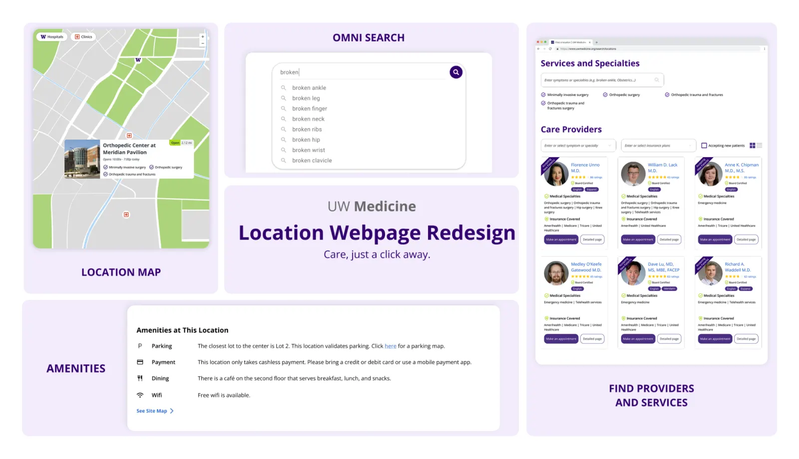
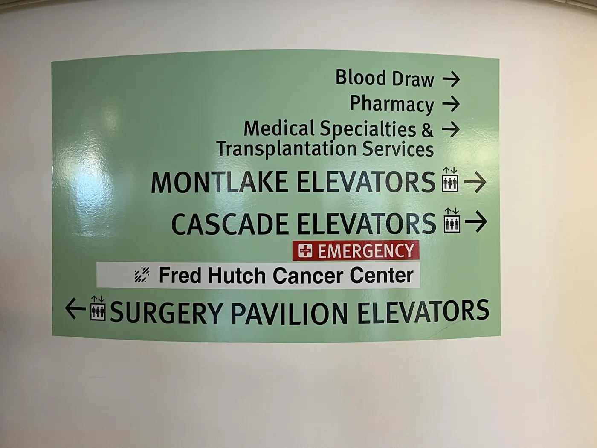
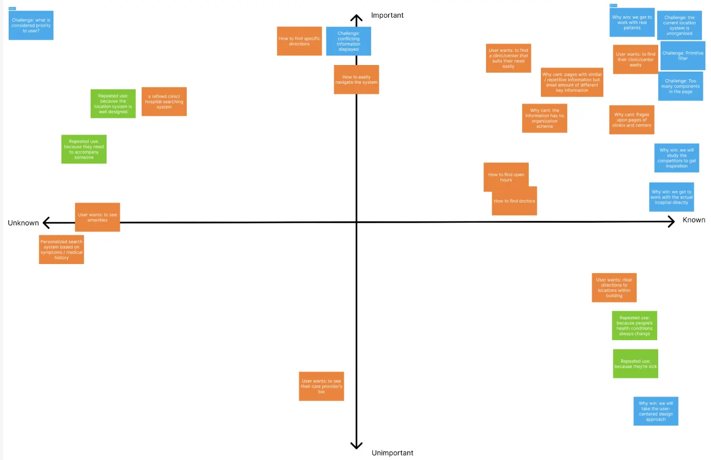
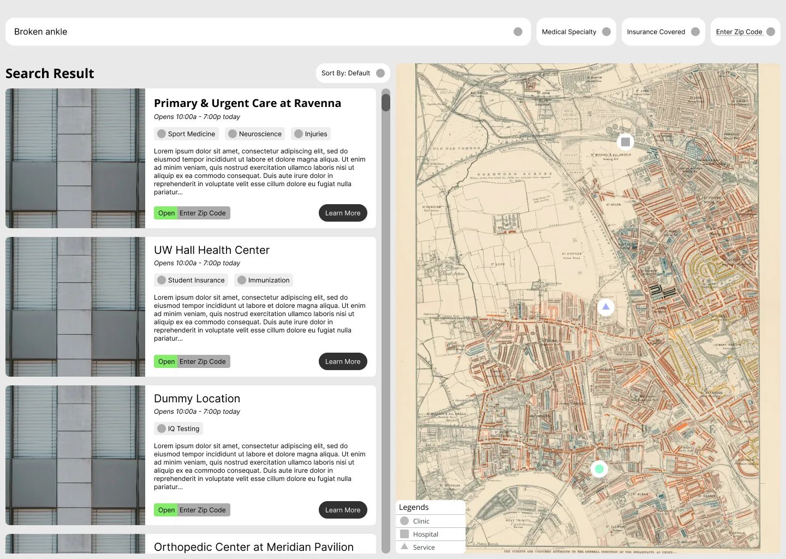
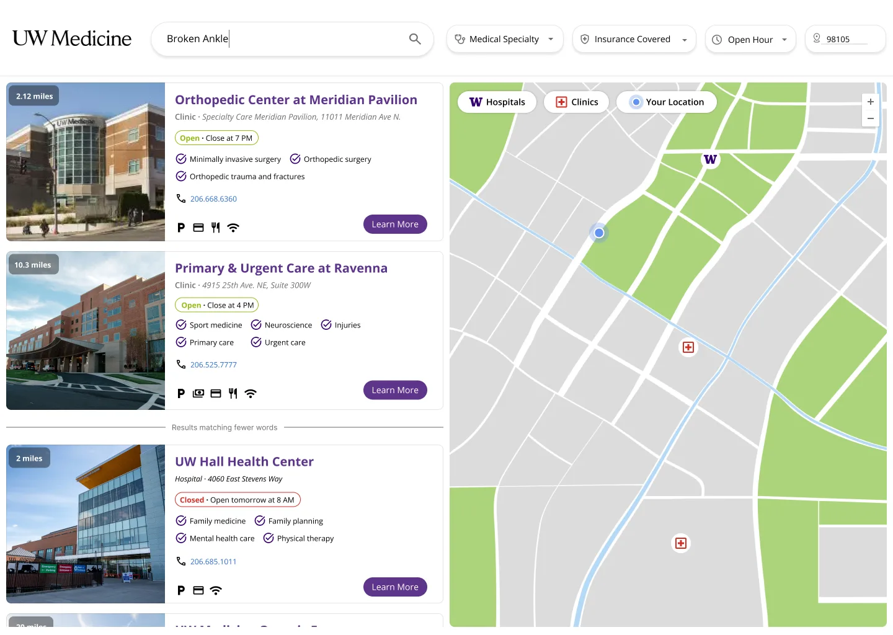
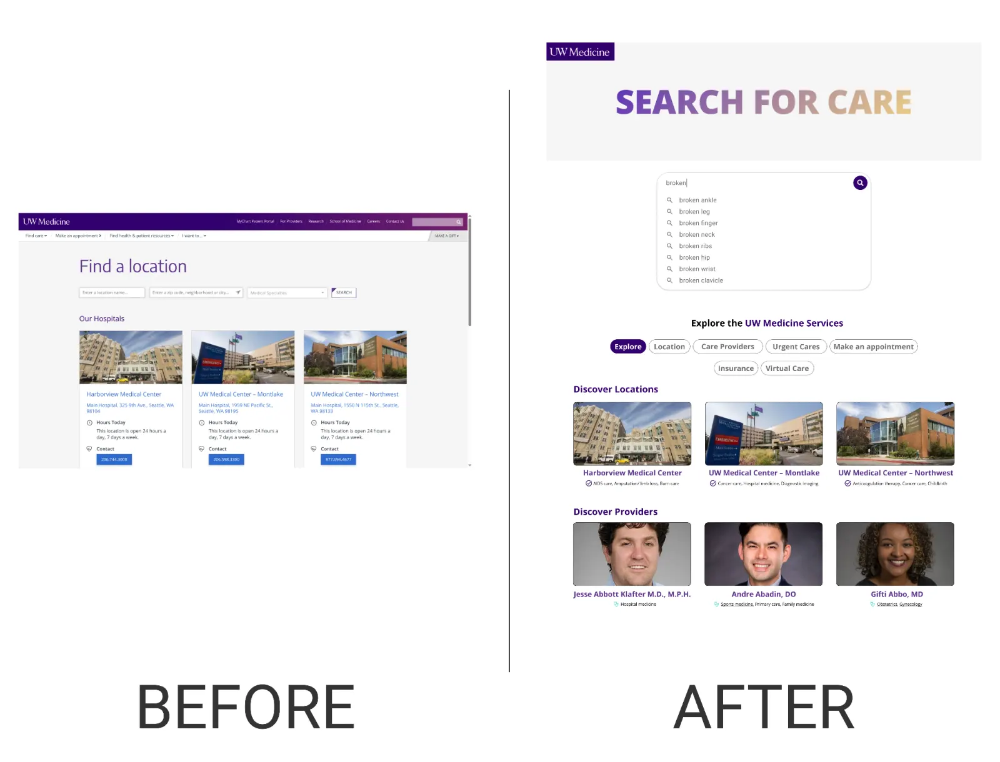
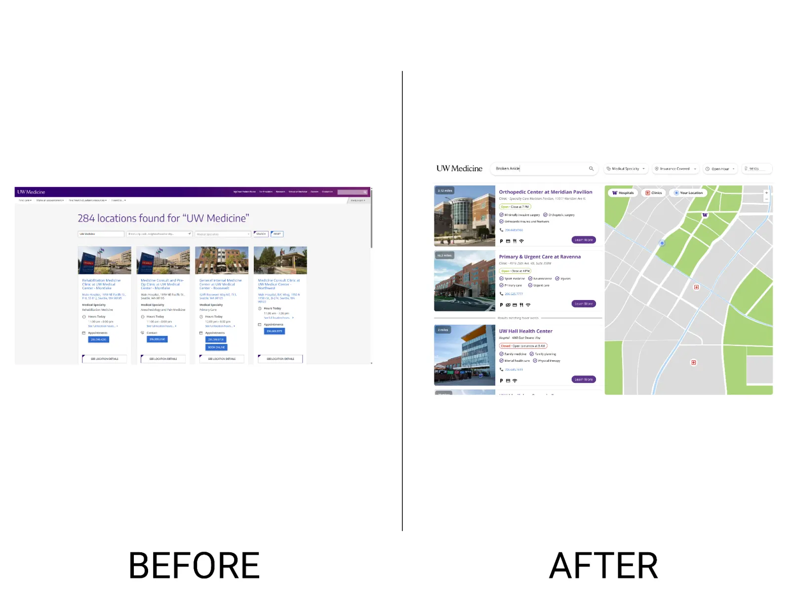
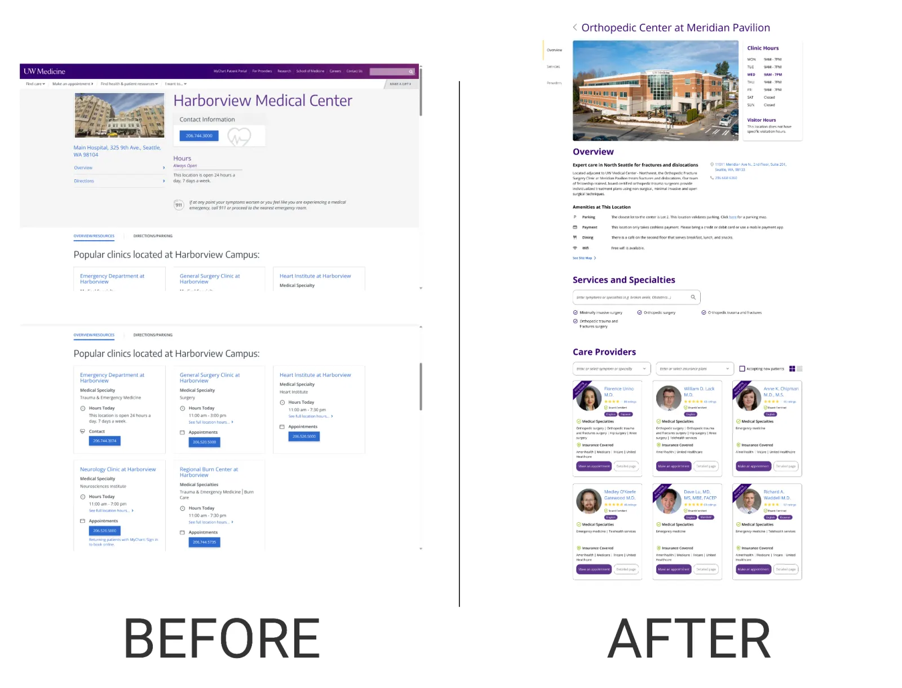
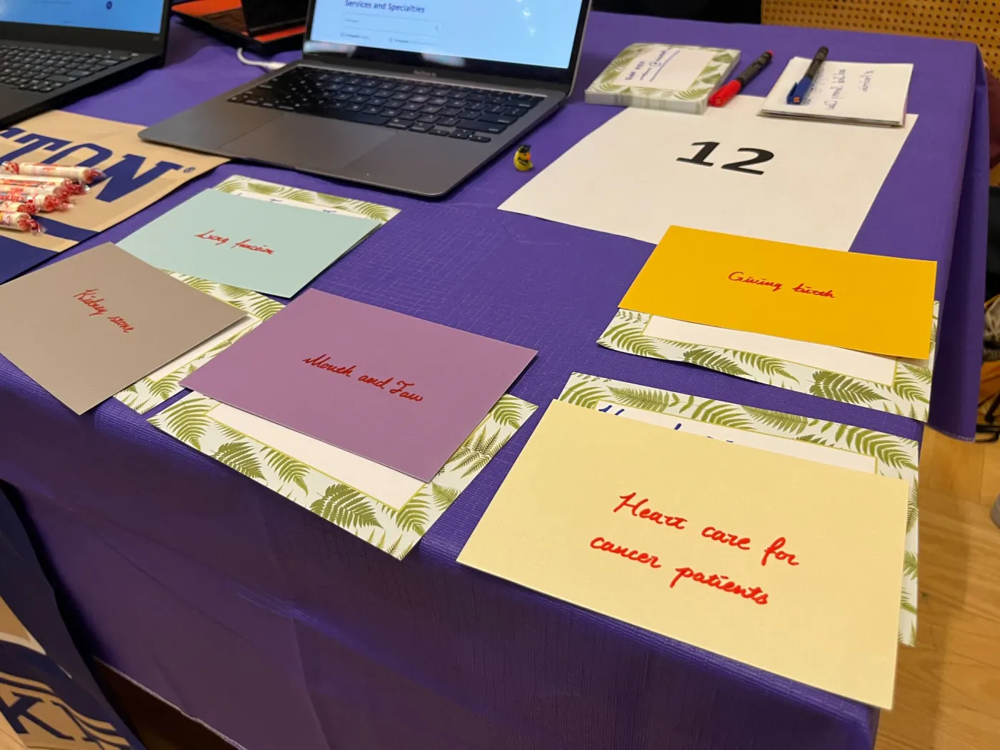

Redesigning UW Medicine's "Find a Location" so patients of any medical or technical background
can find care.

At a Glance
UW Medicine runs 4 hospitals and over 300 clinics, each with its own web page, and patients
struggled to find the one they needed. For our HCDE capstone, our four-person team worked with UW
Medicine to redesign location search and create a reusable location page template, through field
research, two rounds of usability testing and a high-fidelity Figma prototype.
My Role
UX designer and researcher. I ran 2 of the usability tests, went on the Montlake field study,
did the competitive analysis of UC San Diego Health, and helped with affinity mapping, user
flows and the design system. I designed the map results screen from lo-fi to hi-fi, and worked
on our poster, video and showcase game.
Team & Client
4 people, "The Locationologists": Daniel Gao, Carly Minow, Congyi Zhu and me · Sponsor: UW
Medicine
Timeline
Jan – Jun 2024 · 20-week capstone (10 weeks planning, 10 weeks research and design)
Methods
Assumption mapping, competitive analysis, on-site field study, 6 moderated think-aloud tests,
affinity mapping, user flows, lo-fi testing, expert review
Tools
Figma, Miro
Outcome
Plain-language search, map results and a location page template, delivered with a design
system
Research: Where People Got Lost
We started with an assumption map to figure out what we didn't know, then looked at four competitors (UC San
Diego Health, UPMC, Cedars-Sinai and, for comparison, Hilton's hotel pages). Next we went to UW Medical
Center–Montlake ourselves with a scavenger hunt: find the parking, the cafeteria, a charging spot. Most
tasks rated 3 out of 5 for difficulty, and almost none of that information was online.
Then we ran 6 moderated think-aloud tests on the existing site, including a non-native
English speaker and a senior who avoids technology. What we saw:
Too many search bars. People didn't know which one to use.
Medical jargon blocked people. "Immunization" and "eye exam" lists stopped the
non-native speaker; one participant spent over 5 minutes trying to find out whether a flu shot was
available.
Lost in navigation. Participants couldn't get back to search, resorted to Ctrl+F,
and failed to find parking.
"Why does it ask me for the location name first? How would I know where I'm
going if I've never been here before?"Usability test participant

Field study at UWMC–Montlake: wayfinding that never appears online.

Affinity mapping test findings into 5 themes: UI, search, parking, inconsistent
information and amenities.
Key Decisions
One search bar that understands plain language
BeforeSeparate search bars for location name, specialty and zip
code
WhyParticipants didn't know location names and stumbled over
specialty terms. One "omni" search now accepts symptoms ("broken ankle"), providers, services and
places, with suggestions as you type.
Results you can judge at a glance
WhyPeople opened page after page to check basics. Result cards
now show open/closed status, specialties, a phone number and amenity icons, next to a map with
distinct hospital and clinic pins.
IteratedIn round two, the open-status color worked but the distance
chip confused people, so we moved distance onto the photo and kept the color.

My lo-fi map results screen, used in round one.

The hi-fi version, with open status, distance on the photo and filters for
specialty, insurance and hours.
A location page template, in sections
WhyEach location page was laid out differently. The template orders
what patients look for: overview, services (with its own search), providers, then amenities and
parking, with in-page navigation.
IteratedLo-fi tests (3 returning and 2 new participants) showed that
"Services" was too vague and the "check below" hint misled people. We renamed both, made grid
the default provider view, and changed the badge to "Accepting new patients".

Search, before and after.

Results, before and after.

Location page, before and after.
Outcome
We delivered a high-fidelity prototype and a design system built on UW Medicine's brand. At the
showcase, we opened with a game for our two judges, both mid-senior designers: match medical terms like
"nephrolithiasis" to the right clinic, then try again with plain terms like "kidney stone". The second
round was far easier, which is exactly what the new search does. One judge, a UW Medicine patient
herself, called the redesign a drastic improvement over a site that had frustrated her.

The terminology matching game we used to open our showcase.
Reflection
What worked
Going to the hospital in person taught me the most. Walking around Montlake gave me a feel for
how the place actually works, the kind of thing nobody writes on a website.
What I'd change
Our final round was a showcase review, not a task-based test. I'd compare task success on the
old and new designs with patients before calling it done.